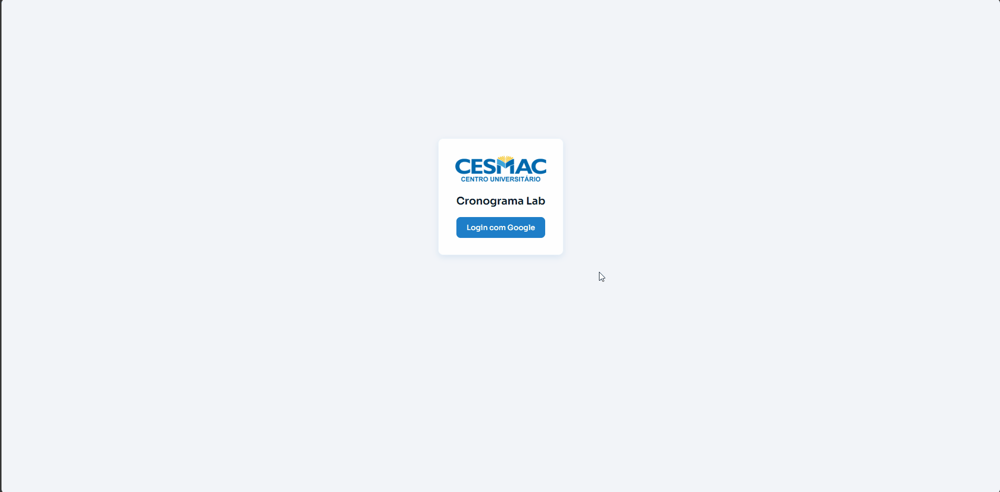
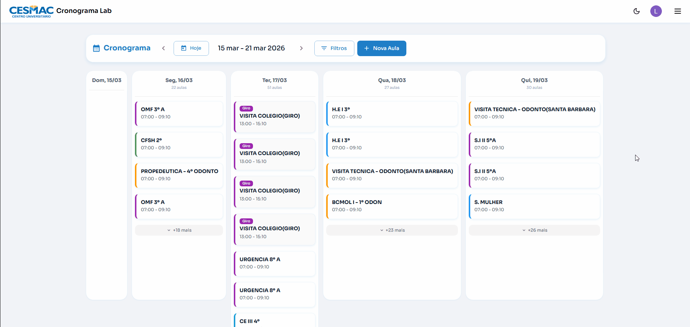
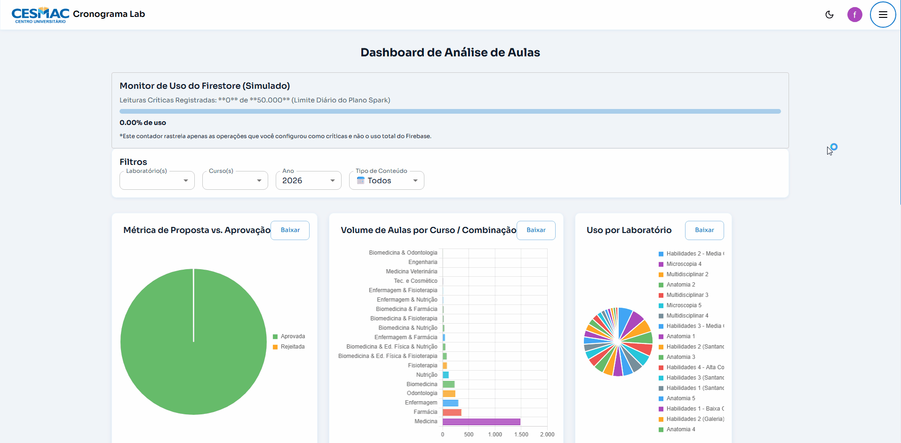
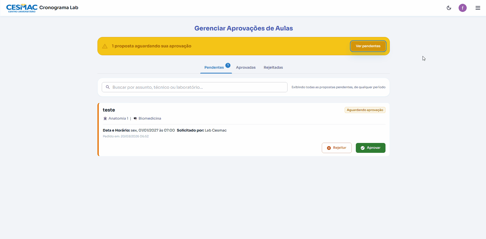
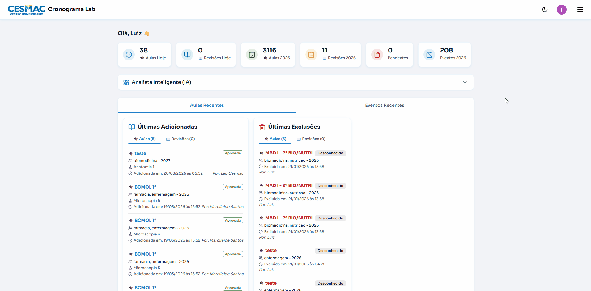

Plataforma web para gestão de agendamentos, análise de ocupação e comunicação entre coordenadores, técnicos e alunos dos laboratórios do CESMAC.
Cada perfil vê exatamente o que precisa — sem informação desnecessária.
Principais funcionalidades do sistema gravadas em uso real.





Construído com ferramentas modernas, rodando 100% no plano gratuito do Firebase.
Acesse o CronoLab em produção ou explore o código no GitHub.